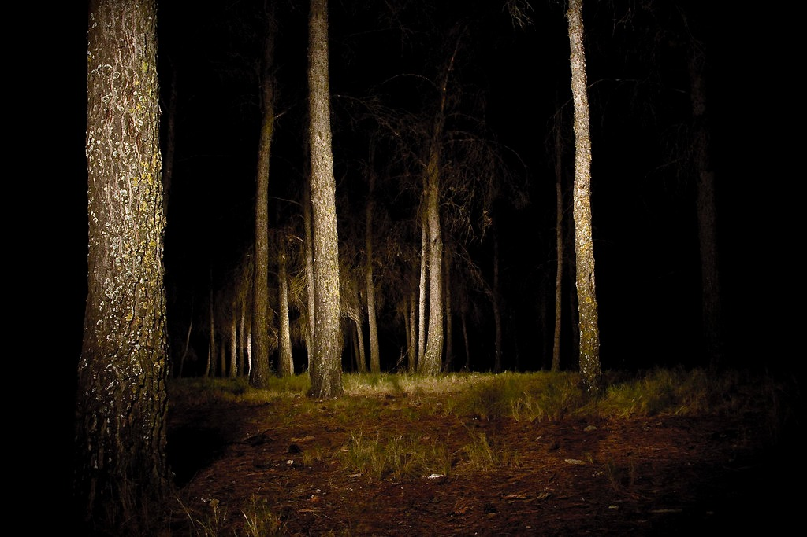

Decides salir del sendero principal y te adentras en un camino más estrecho y oscuro. Los árboles parecen más altos y el ambiente más denso. De repente, escuchas un susurro que proviene de un árbol cercano.
El Misterio del Bosque Encantado
